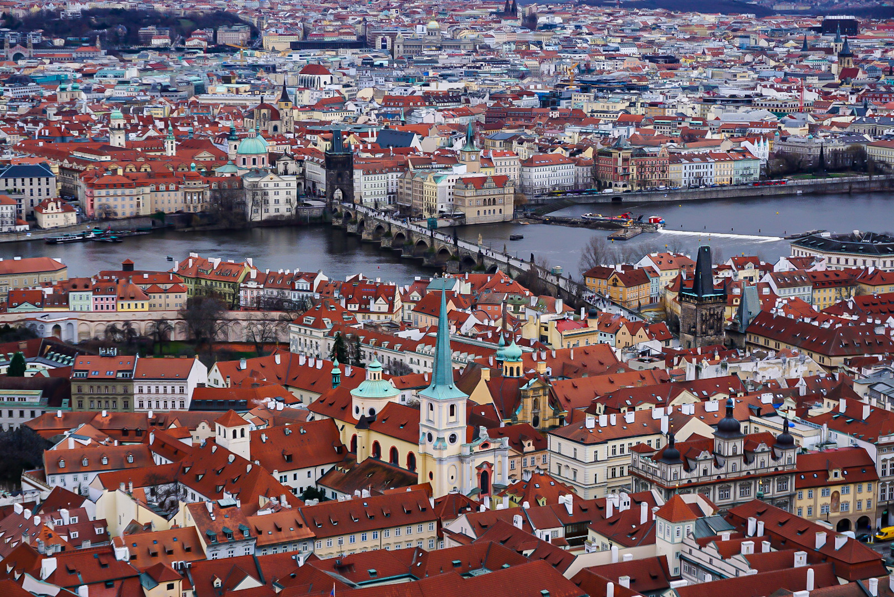

-

Prague
Prague(Praha) is capital city of Czech republic.
Famous for tourism, this city is 5th most visited city in europe.
Which suffered World War II and the democratic revolution called 'Prague Spring', Prague is classified as a 'world city' today and is a UNESCO cultural heritage site that preserves European and Bohemian culture. -
Plzen
Plzen(Plzeň), which is famous for beer(in czech, pivo) 'Pilsner urquell(Plzeňský Prazdroj)', is one of the biggest industrial city in Czech republic.
-
Dresden
Dresden, which is called 'Florence in Germany', overcame the scars of World War II and was reborn as Germany's cultural, educational and political center.
-

Amsterdam
Amsterdam, capital of Netherlands, is called as the "Venice of the North", for its large number of canals, now designated a UNESCO World Heritage site.